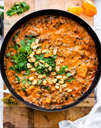

Peanut stew

Description
A vegan stew with a strong taste of peanut. An ideal recipe to meal prep as it stays well in the fridge or freezer. Can be combined with bread or rice.
- Onion
- Sweet potaties
- Blocks of tomato
- Spinach
- Chickpeas
- Bake the onion and add the spices
- Add the sweet potatoes
- Add the blocks of tomato and water to be able to cook the sweet potatoes
- Once the potatoes are cooked add the chickpeas and spinach
- Let it simmer and prep for serving
Home